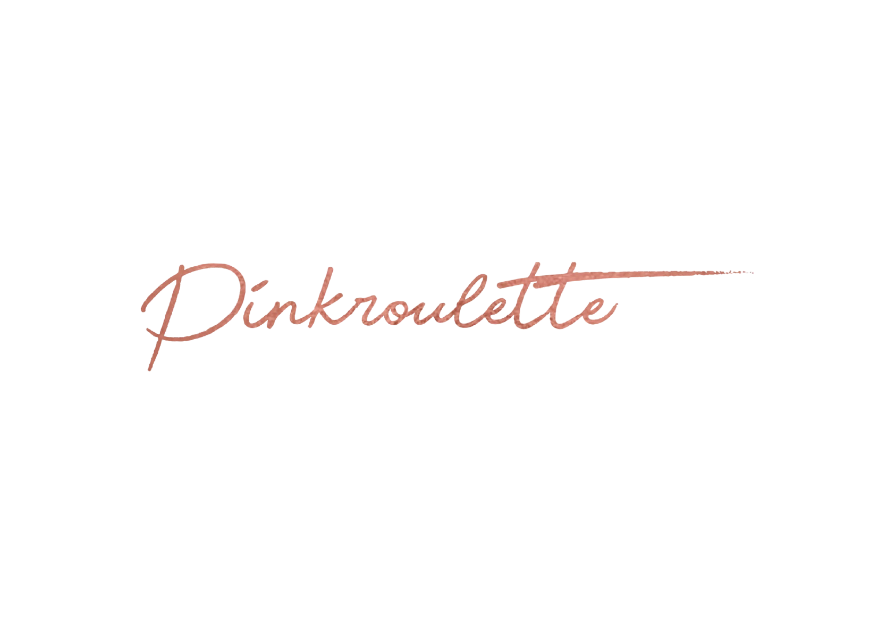
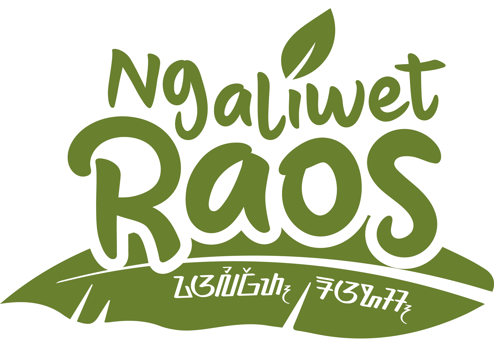

Visual
Creative
Turning human insight
into visual stories
worth telling.
Hi, I'm Dimas.
I cherish simplicity, thoughtful details, and a little room for the unexpected.
Thanks for stopping by. I hope you enjoy looking through the work as much as I enjoyed making it.
Whether you're here out of curiosity, looking for inspiration, or simply having a look around, I hope you find something worth staying for.

Brands I've had the pleasure to work with


